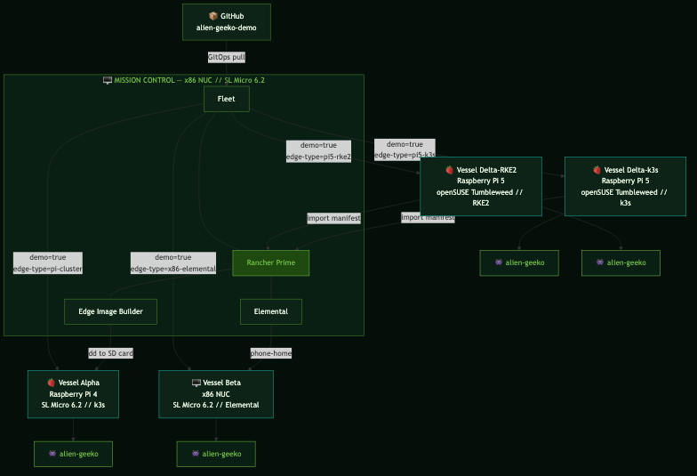

KubeCon + CloudNativeCon Demo
A live edge computing demo running on a fleet of Raspberry Pi boards and x86 NUCs. One management plane. Five vessels. Three provisioning methods. Zero manual config after launch.
View on GitHub// Architecture
Mission Control manages the full fleet from a single pane. Fleet pulls from GitHub and routes the right Kustomize overlay to each vessel based on labels.

// Fleet status
Every vessel runs the same app — alien-geeko — deployed automatically by Fleet the moment the cluster appears in Rancher. No SSH. No manual apply. The app shows live cluster vitals directly in the browser.
// Provisioning paths
Every edge environment is different. SUSE Edge 3.5 covers all three scenarios in a single platform.
EIB // Edge Image Builder
Build a raw disk image with the OS, k3s, users, and SSH keys baked in. Write it to SD card with dd. Boot the Pi. It joins the fleet on first power-on. No network calls. No interactive setup.
Elemental // Phone-Home
Boot from an Elemental-enabled image. The node calls back to Rancher automatically, appears in the Elemental inventory, and waits for cluster assignment. Fleet delivers the workload within seconds.
Rancher Import
Install k3s or RKE2 on any Linux. Apply one kubectl command from Rancher. The cluster agent establishes contact. Fleet takes it from there. Used for Pi 5 boards not yet supported in SL Micro.
// Application
A Node.js app that queries the Kubernetes API at runtime and renders live cluster vitals in a Nostromo CRT terminal UI. No database. No persistent storage. Just a service account token, the K8s API, and a 60-second cache to go easy on the Pi.
The same container image runs on amd64 and arm64. Fleet picks the right overlay per cluster via Kustomize — the only thing that changes is the cluster display name in the UI.
# What the app surfaces per cluster GET /api/info { "clusterName": "VESSEL-ALPHA", "k8sVersion": "v1.29.3+k3s1", "distribution": "k3s", "nodeCount": 1, "arch": "arm64", "osImage": "SL-Micro 6.2", "nodeRole": "control-plane", "cpuCount": 4, "loadAvg": "0.42 0.38 0.31" }
// Stack
// Deployment
Clone the repo, label your clusters in Rancher, add the GitRepo. Fleet does the rest.
# 1. Add the GitRepo in Rancher Continuous Delivery > Git Repos > Add Repository URL: https://github.com/avaleror/alien-geeko-demo Branch: main # 2. Label your clusters demo=true + edge-type=pi-cluster → Vessel Alpha overlay demo=true + edge-type=x86-elemental → Vessel Beta overlay demo=true + edge-type=pi5-k3s → Delta-k3s overlay demo=true + edge-type=pi5-rke2 → Delta-RKE2 overlay demo=true + edge-type=x86-cluster → Mission Control overlay # 3. Verify kubectl auth can-i list nodes \ --as=system:serviceaccount:alien-geeko:alien-geeko yes